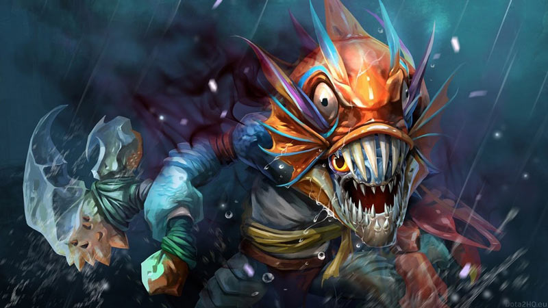
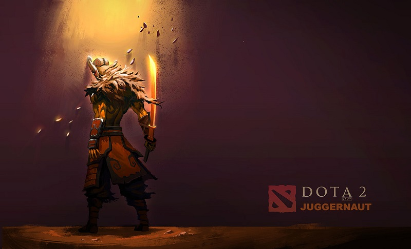

Dota 2 Lore

Perang bukanlah hal yang diinginkan oleh semua orang. Namun, pada kenyataannya...

Slark Buronan berbahaya penjara Dark Reef
Feb 12, 2007Views : 3,487,489
Slark merupakan buronan dari penjara paling buruk, Dark Reef. Ia juga merupakan satu-satunya orang yang...

Yurnero, Sang Juggernaut dengan Masa Lalu yang Tragis
Feb 12, 2007Views : 3,487,489
Juggernaut mungkin adalah salah satu hero paling dikenal dalam Dota 2, dan banyak orang juga sangat menyukainya. Dia adalah...